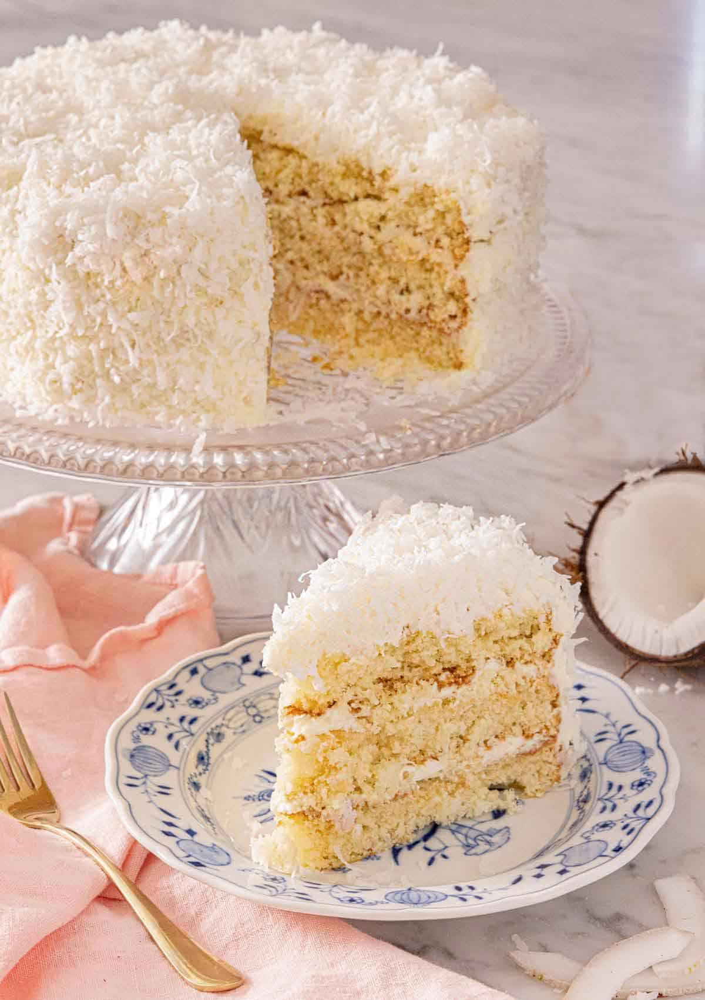

Coconut Cake

Description
Soft, moist, and fluffy, this Coconut Cake recipe is super easy to make from scratch. The light and tender cake layers are frosted with a rich coconut cream cheese frosting and topped with more shredded coconut, so it’s bursting with sweet coconut flavors. It’ll be the best coconut cake you’ll ever make.
your first bite, you will fall in love with this coconut cake recipe. It’s so moist and tender that each bite will melt in your mouth. You also get coconut flavors throughout the entire cake. There’s no shortage of coconut flavor as coconut extract and sweetened shredded coconut are in the cake layers and the cream cheese frosting.
Perfect for any occasion, this coconut cake is simple to make but looks impressive with its layers. It comes together in only a few simple steps, and it’ll quickly become your new favorite cake.
Ingredients
For the cake:
- 360g cake flour
- 400g sugar
- 2 1/4 teaspoons baking powder
- 1/2 teaspoon baking soda
- 1 teaspoon salt
- 227g unsalted butter
- 4 egg whites
- 240ml milk
- 2 teaspoons vanilla extract
- 1 teaspoon coconut extract
- 100g sweetened shredded coconut
For the Coconut Cream Cheese Frosting:
- 227g butter
- 227g cream cheese
- 1 teaspoon vanilla extract
- 1/2 teaspoon coconut extract
- 1/4 teaspoon salt
- 600g powdered sugar
- 250g sweetened shredded coconut
Steps
For the Cake:
- Preheat the oven to 175C. Butter and flour 3 (9-inch) round cake pans or spray with baking spray. Line the bottom of each pan with a circle of parchment paper.
- In a large mixing bowl or the bowl of a stand mixer with the paddle attachment, sift together the flour, sugar, baking powder, baking soda, and salt. Add the butter. Starting at the lowest speed, mix for 1 minute or until the mixture is crumbly.
- Add the egg whites, milk, vanilla, and coconut extract. Mix at low speed until the mixture is well combined. Then, increase the speed to medium and beat until fluffy, about 1 minute. Stop and scrape down the bowl at least once during mixing. Fold in the shredded coconut. Divide the batter among the cake pans and smooth out to the sides with a spatula (the batter will be thick).
- Bake for 30 minutes, rotating the pans after 15 minutes, or until a toothpick inserted into the center comes out with a few moist crumbs. Let the cakes cool in the pan for 20 minutes. Carefully invert and continue cooling on a wire rack. Remove the parchment paper.
For the Coconut Cream Cheese Frosting:
- In a large mixing bowl or the bowl of a stand mixer with the whisk attachment, beat the butter until creamy and fluffy, about 3 minutes. Add the cream cheese, vanilla extract, coconut extract, and salt. Beat until well combined and fluffy, about 2 minutes, stopping to scrape down the bowl occasionally.
- With the mixer on low, add the sugar 1 cup at a time. Once combined, scrape down the bowl, then mix on medium speed until fluffy, about 1 minute.
For the assembly:
- Place one cake layer on a cake stand. Spread about 1 cup of frosting evenly over the top. Top with another cake layer and repeat with more frosting. Top with the remaining cake layer. Spread the remaining frosting all over the outside of the cake. Press the coconut to the frosting all over the top and sides of the cake. Chill for 30 minutes for easy slicing, or keep refrigerated for up to 3 days or until ready to serve.